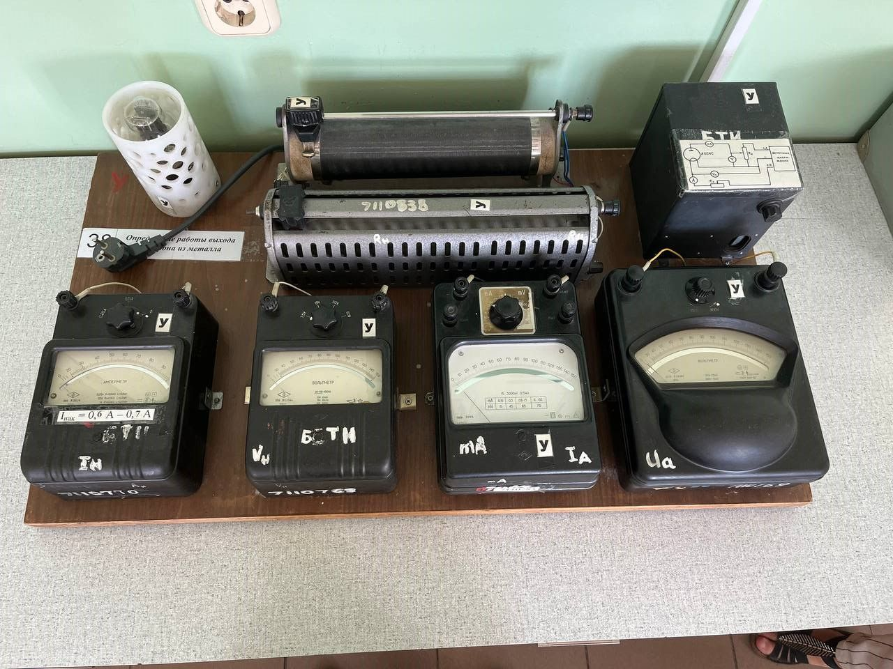
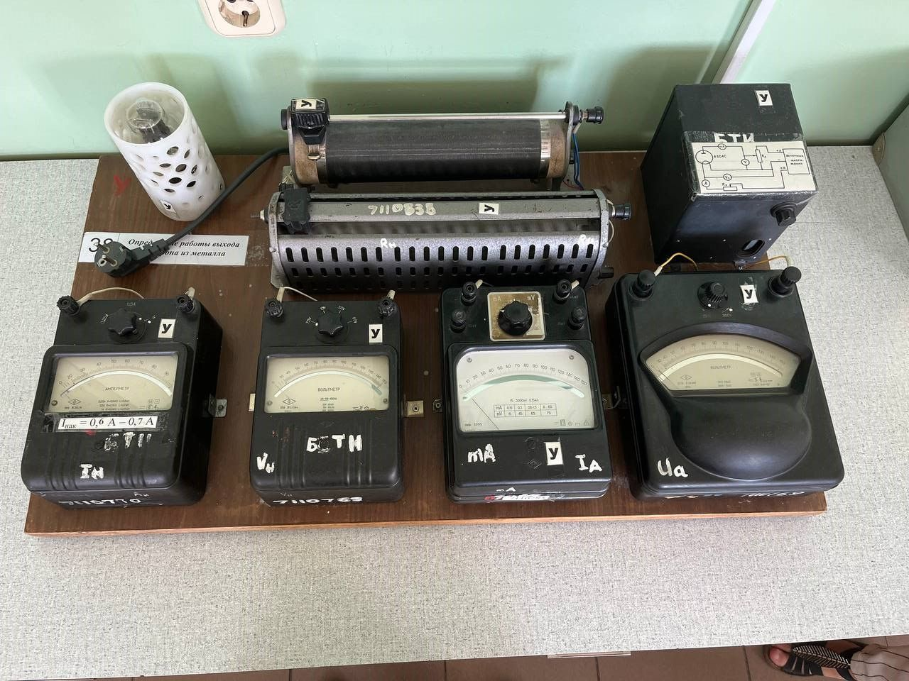

Галерея
Ниже представлены изображения установки с разных ракурсов.
А так-же озвученная карта установки. (кликните на элемент установки).
Карта установки:
 


Список оборудования:
- Амперметр - прибор для измерения силы тока в амперах.
-
Вольтметр - измерительный прибор
непосредственного отсчёта для
определения разности электрических потенциалов, напряжения или
ЭДС в электрических цепях. - Выпрямитель - преобразователь электрической энергии
-
Источник напряжения - двухполюсник,
напряжение на зажимах которого
не зависит от тока - Лампа накаливания - искусственный источник света.
- Миллиамперметр - лабораторный прибор электромагнитной системы
- Энергия напряжения - скалярная физическая величина.
Принцип работы:
Изображение лабораторной установки для измерения работы выхода электрона представлена на карте слева Источником необходимых напряжений для анодной цепи и цепи накала катода служит Выпрямитель. Величина анодного наА К Выпрямитель ∼ 220 В + − V1 A Rа Rнак V2 тA Рис. 38.1 52 ЭЛЕКТРИЧЕСТВО НАПРЯЖЕНИЯ Uа регулируется делителем Ra и измеряется вольтметром V1 , а сила анодного тока Iа измеряется миллиамперметром mA. Для измерения напряжения накала Uнак используется вольтметр V2 . Сила тока накала Iнак в цепи катода регулируется переменным резистором Rнак и измеряется амперметром